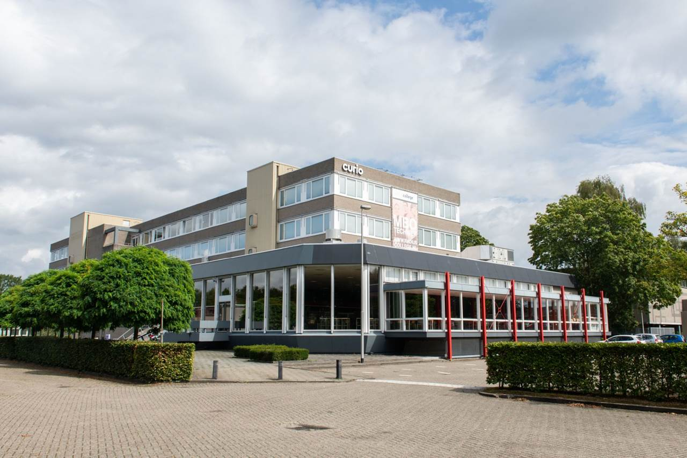

Inleiding over de MBO-opleiding Software Developer
Tijdens de MBO-opleiding Software Developer krijg je een uitgebreide training in het ontwikkelen van software en het bouwen van apps. Je leert werken met verschillende programmeertalen zoals C#, PHP en JavaScript, waarmee je alles kunt maken, van websites en applicaties tot complexe toepassingen en media-oplossingen. De opleiding richt zich niet alleen op het schrijven van code, maar ook op het begrijpen van de wensen van de klant en het omzetten van die wensen in functionele en gebruiksvriendelijke software. Je krijgt praktische ervaring in het testen en optimaliseren van je projecten, zodat je zeker weet dat ze perfect functioneren voordat ze worden opgeleverd. Deze opleiding bereidt je voor op een rol als software developer, waarbij je jouw technische vaardigheden inzet om innovatieve oplossingen te creëren en te implementeren.
locatie Breda: terheijdenseweg 350 breda
Vakken in het Eerste Jaar
-
Nederlands: Nederlands taal leren op niveau B3.
In deze cursus Nederlands leer je de taal op niveau B3. Dit omvat geavanceerde grammatica, schrijfvaardigheden en spreekvaardigheden.
-
Engels: Engels taal leren op niveau B2.
De cursus Engels brengt je naar niveau B2, waarbij je vaardigheden in spreken, luisteren, lezen en schrijven worden verbeterd.
-
Rekenen: Rekenen op niveau 3F.
De rekenlessen zijn gericht op niveau 3F, met een focus op toepassingen in het dagelijks leven en werk.
-
PRA: Je gaat aan de slag met opdrachten die je ook in het bedrijfsleven tegenkomt.
PRA is gericht op praktijkopdrachten die nauw aansluiten bij wat je in het bedrijfsleven tegenkomt. Je leert hoe je deze opdrachten effectief kunt uitvoeren.
-
PRO: Je leert hoe je een project moet aanpakken en hoe je moet samenwerken.
Bij PRO leer je projectmanagement en samenwerkingstechnieken die essentieel zijn voor het succesvol uitvoeren van projecten.
-
WEB: Je leert websites maken met HTML, CSS, JavaScript en PHP.
In de WEB cursus leer je de basis van webontwikkeling, waaronder HTML, CSS, JavaScript en PHP om functionele websites te bouwen.
-
NATIVE: Je leert apps maken voor de micro:bit en Windows.
De NATIVE cursus leert je hoe je applicaties ontwikkelt voor de micro:bit en Windows-platforms, met een focus op praktische toepassing.
Voorbeeld Rooster

Indeling van de Blokken
Het schooljaar is opgedeeld in 2 blokken dit is de indeling van blok 1

Docenten
Bart Roos
Vak: PRA
Mustafa Kasar
Vak: Engels
Elton Boekhout
Vak: WEB
Bart Kouwenberg
Vak: Native
steven van rosendaal
Vak: Native
joep van gils
Vak: Nederlands